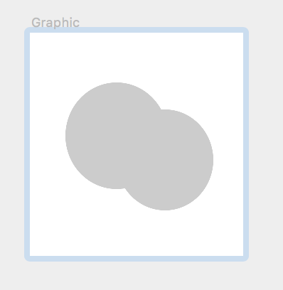

06.10.18
FRAMER
X
ПРЕЗЕНТА
ЦИЯ
Что за софт Framer X?
Программа для создания фреймов, интерфейсов и их редактирования, работа с интерактивным дизайном. Все элементы во фреймере построены на коде React, поэтому программа позволяет писать код прямо в React, а на основе него создает и редактирует элементы сама.Во фреймере так же есть возможность работать в командах, запасаться компонентами и цельными проектами или библиотеками в магазине и конечно делиться впечатлениями со всем коммьюнити.
Layout
При создании различных фреймов, к примеру возьмем в начале айпад, а затем поменяем на айфон 8, будет показываться предыдущий фрейм с айпадом, при чем начнет выстраиваться иерархия из них( с уже отрегулированными отступами). Если мы захотим создать фрейм внутри фрейма, а для нормального UI так и стоит поступать, ибо тогда элементы интерфейса к примеру будут связаны между собой и интерактивны. Если попытаться например увеличить родительский фрейм, то в итоге начнут подстраиваться под размер и фреймы дети. Если что-либо нас не устраивает в авто размерах, то идем в properties (панель справа) и регулируем все сами.Если планируем что-то поменять, то для того, чтобы не накосячить даже сделали превью в той же панели справа.
Components
Работают по тому же принципу, что и компоненты в Sketch или Figma. Если захотим вернуть дочернему компоненту отцовский вид, то кликаем правой кнопкой мыши для открытия меню и жмем reset override.В панели компонентов также есть возможность загрузить готовые, созданные вами или просто скачанные, например компоненты плееров, аналитики и тп, и уже внутри программы их редактировать.
Drawing tool( graphic)
При создании различных фреймов, к примеру возьмем в начале айпад, а затем поменяем на айфон 8, будет показываться предыдущий фрейм с айпадом, при чем начнет выстраиваться иерархия из них( с уже отрегулированными отступами). Если мы захотим создать фрейм внутри фрейма, а для нормального UI так и стоит поступать, ибо тогда элементы интерфейса к примеру будут связаны между собой и интерактивны. Если попытаться например увеличить родительский фрейм, то в итоге начнут подстраиваться под размер и фреймы дети. Если что-либо нас не устраивает в авто размерах, то идем в properties (панель справа) и регулируем все сами.Если планируем что-то поменять, то для того, чтобы не накосячить даже сделали превью в той же панели справа.

Interactive tools for prototyping
Интерактивы используются для создания макета функций приложения или сайта, с помощью линков мы объединяем нужные нам компоненты, а затем выбираем как( типа скролл), в какую сторону двигаться и какой из компонентов будет первичным.
Stack
Блоки сами подстраиваются под расположенные рядом с ними,то есть , если ты хочешь передвинуть, что-то,то shift зажимать уже не придется,так же доступно разделение блоков на равные части без корректива размера)Помимо прекрасной регулировки размеров в функции Stack, во фрейме можно создать несколько стеков, а затем менять их между собой уже, при чем авторегулировка остается, а чтобы поменять что-то конкретное или задать другие значения мы так же обращаемся в properties. Функция стэк является компонентом со своими свойствами.
Продолжаем
08.10.18
Восьмое
Октября
Сегодня мне пришлось остаться дома к моему большому сожалению ( я очень люблю ходить в универ) , потому что еще с воскресенья я себя ужасно чувствую, в животе какая-то голодная боль весь день, даже если я ем и температура. Однако, это не повод не работать, поэтому сегодня почти весь день я занималась изучением теории относительно сетки и типографики, а также немного цвета. Еще мною было совершенно одно открытие ( на почве изучения сетки) . Кухня- это просто сборник сеток, особенно посудомойка и просто мойка.
12.10.18
Двенадцатое
Октября
Подвожу итоги этой недели, я посетила только 2 дня на этой неделе по причине болезни, но это не остановило рабочий и учебный процесс. В понедельник Захар поделился методикой Канбан в Trello и Double Diamond, про них поподробнее в его статье на Медиуме:
Kanban by Zahar Day
Если вкратце, то обе методики помогают правильно организовать рабочий процесс, повысить результативность. Например в трелло мы создали свою доску с кучей разных карточек. Лично для себя я заметила, что пока у меня слишком маленькое количество проектов, чтобы как-то все это заполнять да и заполнение должно войти в привычку. Когда у меня появляется новая идея, то я обычно записываю её в скетчбук или свою тетрадочку со снами. А если я за компом, то пишу себе в заметки одно предложение или даже слово и от него у меня в голове уже выстраивается карта ассоциаций, но это опять же связано с небольшим количеством работы.
Пока я это писала, то решила: “Так и быть, надо с чего-то начинать, сейчас запишу все свои мелкие делишки и закину скрин сюда”
Едем дальше. На этой неделе мы с Женей изучили свойство display и position для регулирования блоков и элементов на странице:
Существует несколько видов позиционирования (static,fixed,absolute,relative),но относительное позиционирование является самым сложным для понимания, однако простым в применении.
17.10.18
Семнадцатое
Октября
Писали тест по английскому на первой паре, полный разнос, за 40 минут и эссе по графику и тест, зато потом вышли с девочками и отдохнули, немного поверстали дневники в дабл би, потом был тест по истории искусств,достаточно легкий,всего 20 вопросов.
23 октября вторник
Первый просмотр по креативному проектированию уже миновал, было интересно посмотреть на проекты ребят и из других групп. Проект “ Музей чувств” вообще сбил с ног, вот у кого надо учиться.Получила по БЖД за дз 9, неплохой результат, осталось узнать оценки по английскому, истории искусств, написать тест по БЖД завтра и в пятницу сдать дневник. Вот думаю, буду ли я продолжать его вести или нет, наверное стоит, потому что это сундук со всем изученным, так как код дневника и все его составляющие идут ровно по программе. На следующий модуль хочется пожелать себе побольше времени для здоровья и учебы вне универа, ну и конечно еще большей усидчивости.